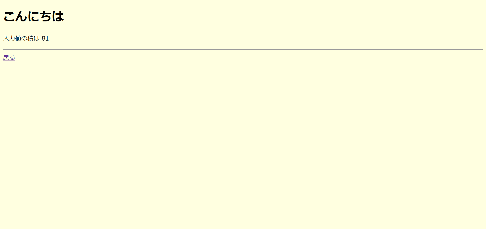

Perl(CGI)を動かす
Apache の設定
| ubuntu@ip-172-31-85-199:/var/www/html$ sudo vim /etc/apache2/sites-enabled/000-default.conf
|
/etc/apache2/sites-enabled/000-default.confを編集し、perl スクリプトを有効化します。
変更前
| <VirtualHost *:80>
# The ServerName directive sets the request scheme, hostname and port that
# the server uses to identify itself. This is used when creating
# redirection URLs. In the context of virtual hosts, the ServerName
# specifies what hostname must appear in the request's Host: header to
# match this virtual host. For the default virtual host (this file) this
# value is not decisive as it is used as a last resort host regardless.
# However, you must set it for any further virtual host explicitly.
#ServerName www.example.com
ServerAdmin webmaster@localhost
DocumentRoot /var/www/html
# Available loglevels: trace8, ..., trace1, debug, info, notice, warn,
# error, crit, alert, emerg.
# It is also possible to configure the loglevel for particular
# modules, e.g.
#LogLevel info ssl:warn
ErrorLog ${APACHE_LOG_DIR}/error.log
CustomLog ${APACHE_LOG_DIR}/access.log combined
# For most configuration files from conf-available/, which are
# enabled or disabled at a global level, it is possible to
# include a line for only one particular virtual host. For example the
# following line enables the CGI configuration for this host only
# after it has been globally disabled with "a2disconf".
# Include conf-available/serve-cgi-bin.conf
</VirtualHost>
# vim: syntax=apache ts=4 sw=4 sts=4 sr noet
|
変更後
| <VirtualHost *:80>
# The ServerName directive sets the request scheme, hostname and port that
# the server uses to identify itself. This is used when creating
# redirection URLs. In the context of virtual hosts, the ServerName
# specifies what hostname must appear in the request's Host: header to
# match this virtual host. For the default virtual host (this file) this
# value is not decisive as it is used as a last resort host regardless.
# However, you must set it for any further virtual host explicitly.
#ServerName www.example.com
AddHandler cgi-script .cgi .pl
ServerAdmin webmaster@localhost
DocumentRoot /var/www/html
<Directory /var/www/html>
Options ExecCGI
DirectoryIndex index.php
</Directory>
# Available loglevels: trace8, ..., trace1, debug, info, notice, warn,
# error, crit, alert, emerg.
# It is also possible to configure the loglevel for particular
# modules, e.g.
#LogLevel info ssl:warn
ErrorLog ${APACHE_LOG_DIR}/error.log
CustomLog ${APACHE_LOG_DIR}/access.log combined
# For most configuration files from conf-available/, which are
# enabled or disabled at a global level, it is possible to
# include a line for only one particular virtual host. For example the
# following line enables the CGI configuration for this host only
# after it has been globally disabled with "a2disconf".
# Include conf-available/serve-cgi-bin.conf
</VirtualHost>
# vim: syntax=apache ts=4 sw=4 sts=4 sr noet
|
Python(CGI)の設定から少し変更があります。
AddHandler cgi-script .cgi .plに.plを追加してください。
コード
| /var/www/html/test.html |
|---|
| <!DOCTYPE html>
<html>
<head>
<meta charset="utf-8" />
</head>
<body bgcolor="lightyellow">
<h1>入力値の積を表示します</h1>
<form action="index.py" method="POST">
値１を入力してください
<input type="text" name="value1" />
値２を入力してください
<input type="text" name="value2" />
<input type="submit" name="submit" value="送信" />
</form>
</body>
</html>
|
| /var/www/html/index.pl |
|---|
| #! /usr/bin/perl
use CGI;
my $query = CGI -> new; # cgiオブジェクト作成
my $v1 = $query -> param('value1'); # nameがvalue1の値を取得
my $v2 = $query -> param('value2'); # nameがvalue2の値を取得
print "Content-Type: text/html; charset=UTF-8;\n\n";
my $html = <<"EOF";
<!DOCTYPE html>
<html>
<head><meta charset="utf-8" /></head>
<body bgcolor="lightyellow">
<h1>こんにちは</h1>
<p>入力値の積は %s<br/></p>
<hr/>
<a href="test.html">戻る</a>
</body>
</html>
EOF
my $ans = $v1 * $v2;
$html =~ s/%s/$ans/; # 入力値の積を%sの箇所に埋める
print $html;
|
Note
index.pyには権限の755などを指定してください。(その他のユーザーに、スクリプトの実行権限と読み取り権限を与えて下さい)
詳細は以下を確認してください。
パーミッション
結果
Note
SSH接続した際に使ったIP アドレスをブラウザに入力する。
http://{ip address}/test.htmlにアクセスする。

入力してボタンを押した結果

このように入力した数字の積が出力されれば正常です。